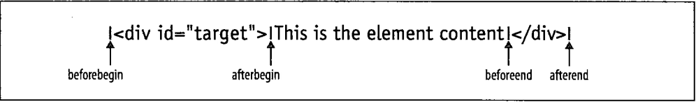

- 15.5元素的内容
- HTML表示,纯文本表示和元素内容的树状表示
- 15.5.1作为HTML的元素内容
- 读取Element的innerHTML属性作为字符串标记返回那个元素的内容
- web浏览器很擅长解析HTML,通常设置innerHTML效率非常高,甚至在指定的值需要解析时效率也是相当不错
- HTML5说innerHTML应该在Document节点以及Element节点上工作正常,但这还未被普遍地支持
- HTML5还标准化了outerHTML属性.当查询outerHTML时,返回的HTML或XML标记的字符串包含被查询元素的开头和结尾标签.当设置元素的outerHTML时,元素本身被新的内容所替换
- IE引入的另一个特性是insertAdjacentHTML()方法,它将在HTML5标准化,它将任意的HTML标记字符串插入到指定的元素'相邻'的位置
- beforebegin,afterbegin,beforeend,afterend这些值对应的插入

- 15.5.2作为纯文本的元素内容
- textContent属性在除了IE的所有当前的浏览器中都支持.在IE中,可以用Element的innerText属性来
- textContent和innerText属性非常相似,通常可以互相替换使用
- textContent属性就是制定元素的所有后代Text节点简单地串联在一起.
- innerText不返回script元素的内容.它忽略多余空白,并试图保留表格格式.同时.innerText针对某些表格元素是只读的属性
- 简单地将元素的的type设置为某些值(text/x-custom-data),就表明了脚本为不可执行的javascript代码.
- javascript解析器将忽略该脚本,但该元素将仍然存在文档树中,它的text属性还将返回数据给你
- 15.5.3作为Text节点的元素内容
- 在XML文档中,你也必须准备好处理CDATASection节点-它是Text的子类型,代表CDATA段的内容
- nodeValue属性可以读/写设置它们可以改变Text或CDATASection节点所显示的内容
- CharacterData还定义了一些在Text或CDATASection节点中不太常用的方法来添加,删除,插入和替换文本